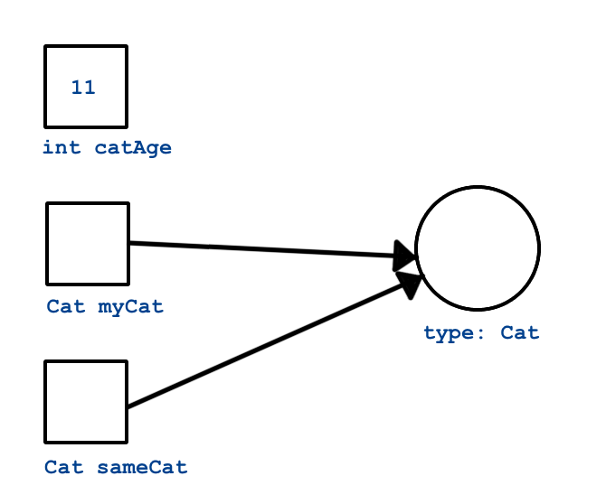

Data Types
How Java handles values and variables is extremely different from how they are implemented in Python.
Static vs. Dynamic Typing
Python is a dynamically typed language. In a dynamically typed language a variable or parameter can refer to any kind of value at any time. When the variable is used, the interpreter figures out what type it is and behaves accordingly.
Java is a statically typed language. In a statically typed language the association between a variable or parameter and the type of value it can refer to is determined when the variable or parameter is declared. Once the declaration is made it is an illegal for a it to refer to a value of any other type.
For example, this is legal in Python:
x = "dog"
x = 42If we were to inspect the type of x after the first line executes (e.g. using Python's type() function) we would find that it was a string. After the next line executes, it is an integer. x is allowed to hold values of different types.
However, the corresponding code in Java will result in a compiler error:
String x = "dog";
x = 42;The compiler error would occur when we try to assign 42 to a variable of type String. This is simply not allowed in Java.
Formally, this means that we must declare the type of every variable and parameter in a statically typed language. This is done by preceding the variable or parameter name with the name of its type, as we did in the example above: String x = "dog".
Dynamic and static typing are examples of different type systems. The type system of a programming language is one of the most important high-level characteristics that programmers use when discussing the differences between languages. Here are a few examples of popular languages falling into these two categories:
- Dynamic: Python, Ruby, Javascript, PHP
- Static: Java, C, C++, C#, Ada
This major difference between Python and Java will mean that we'll need to pay much more attention to types when writing Java. Let's begin by exploring the most common and important data types in this language.
String
Strings in Java and Python are quite similar. Like Python, Java strings are immutable. However, manipulating strings in Java is not quite as obvious since strings do not support an indexing or slicing operator. That is not to say that you can’t index into a Java string; you can. You can also pull out a substring just as you can with slicing. The difference is that Java uses method calls where Python uses operators.
This is the first example of another big difference between Java and Python: Java does not support operator overloading. The table below maps common Python string operations to their Java counterparts. For the examples shown in the table, we will use a string variable called str.
| Python | Java | Description |
|---|---|---|
str[3] |
str.charAt(3) |
Return character in 3rd position |
str[2:5] |
str.substring(2,4) |
Return substring from 2nd to 4th |
len(str) |
str.length() |
Return the length of the string |
str.find('x') |
str.indexOf('x') |
Find the first occurrence of 'x' |
str.split() |
str.split('\s') |
Split the string on whitespace into a list/array of strings |
str.split(',') |
str.split(',') |
Split the string at ',' into a list/array of strings |
str + str |
str.concat(str) |
Concatenate two strings together |
str.strip() |
str.trim() |
Remove any whitespace at the beginning or end |
Primitive Types
One of the great things about Python is that all of the basic data types are objects. Integers are objects, floating point numbers are objects, lists are objects, everything is an object. In Java that is not the case; some of the most basic data types like integers and floating point numbers are not objects. The benefit of having these primitive data types be non-objects is that operations on the primitives are fast. Historically, however, it became difficult for programmers to combine objects and non-objects in the way that we do in Python. So as Java evolved, eventually all the non-object primitives ended up with objectified versions.
| Primitive | Class | Examples | Notes |
|---|---|---|---|
int |
Integer |
-5 1024 |
|
float |
Float |
1.212 3.14 |
|
double |
Double |
3.14159 2.0 |
Doubles are twice as precise (i.e. can hold much longer decimal numbers) than floats |
char |
Char |
'a' '!' |
A single Unicode character. Must be enclosed in single quotes '' to be a character; double-quotes "" indicate a string |
boolean |
Boolean |
true false |
Note that booleans in Java are not capitalized as they are in Python. |
Not all primitive types in Java are listed here, only the most commonly used types that beginners are likely to encounter. If you're curious, read more about primitive types in Java
Autoboxing
In older versions of Java it was the programmer's responsibility to convert back and forth from a primitive to an object whenever necessary. This involved converting a value of a primitive type to an object type, or vice versa. It looked like this:
int x = 5;
Integer y = Integer.valueOf(x);
int z = (int) y;This processing of converting a primitive to an object (e.g. Integer y = Integer.valueOf(x)) was called boxing. The reverse process (e.g. int z = (int) y) is called unboxing. In Java 5, the compiler became smart enough to know when to convert back and forth. This process is called autoboxing. The consequence of autoboxing for the Java programmer is that in many situations you can use primitive and object types interchangeably.
Example: The TempConv Program
Let's go back in time and look at another of our very early Python programs. Here is a simple Python function to convert a Fahrenheit temperature to Celsius.
def main():
fahrenheit = int(input("Enter the temperature in F: "))
celsius = (fahrenheit - 32) * (5.0 / 9.0)
print("the temperature in C is: ", celsius)
if __name__ == '__main__':
main()Next, lets look at the Java Equivalent.
import java.util.Scanner;
public class TempConv {
public static void main(String[] args) {
double fahrenheit;
double celsius;
Scanner in;
in = new Scanner(System.in);
System.out.println("Enter the temperature in F: ");
fahrenheit = in.nextDouble();
celsius = (fahrenheit - 32) * 5.0/9.0;
System.out.println("The temperature in C is: " + celsius);
}
}There are several new concepts introduced in this example. We will look at them in the following order:
importstatement- Variable declaration
- Input/output and the
Scannerclass
import
In Java, you can use any class that is available without having to import the class subject to two very important conditions:
- The
javacandjavacommands must know that the class exists. - You must use the full name of the class
How do the java and javac commands know that certain classes exist? We have these rules:
- Java knows about all the classes that are defined in
.javaand.classfiles in your current working directory. - Java knows about all the classes that are shipped with java.
- Java knows about all the classes that are included in your
CLASSPATHenvironment variable. YourCLASSPATHenvironment variable can name two kinds of structures:- A jar file that contains java classes. (A jar file is a "Java archive", and ends in
.jar. For now, think of it as a zip file that contains a bunch of classes.) - Another Unix directory that contains Java class files.
- A jar file that contains java classes. (A jar file is a "Java archive", and ends in
You can think of the import statement in Java as working a little bit like the from module import xxx statement in Python. However, behind the scenes the two statements actually do very different things.
The first important difference to understand is that the class naming system in Java is very hierarchical. The full name of the Scanner class is really java.util.Scanner. You can think of this name as having two parts: The first part java.util is called the package, and the last part is the class. We’ll talk more about the class naming system a bit later. The second important difference is that it is the Java class loader’s responsibility to load classes into memory, not the import statement’s.
The import statement tells the compiler that we are going to use a shortened version of the class’s name. In this example we are going to use the class java.util.Scanner, but we can refer to it as just Scanner. We could use the java.util.Scanner class without any problem and without any import statement provided that we always referred to it by its full name.
Don't just trust us, try it yourself! Remove the import statement and change Scanner to java.util.Scanner in the rest of the code. The program should still compile and run.
Declaring Variables
In the example above, these lines contain variable declarations:
double fahrenheit;
double celsius;
Scanner in;Specifically we are saying that fahrenheit and celsius are going to reference objects that are of type double. The variable in will reference a Scanner object. This means that if we were to try an assignment like fahrenheit = "xyz" the compiler would generate an error because "xyz" is a string and fahrenheit is supposed to be a double.
For Python programmers the following error is likely to be even more common. Suppose we forgot the declaration for celsius and instead left line 6 blank. What would happen if we try to manually compile our programing using javac TempConv.java on the command line?
TempConv.java:13: cannot find symbol
symbol : variable celsius
location: class TempConv
celsius = (fahrenheit - 32) * 5.0/9.0;
^
TempConv.java:14: cannot find symbol
symbol : variable celsius
location: class TempConv
System.out.println("The temperature in C is: " + celsius);
^
2 errorsWhen you see the first kind of error, where the symbol is on the left side of the assignment operator, it usually means that you have not declared the variable. If you have ever tried to use a Python variable that you have not initialized the second error message will be familiar to you. The difference here is that we see the message before we ever try to test our program.
The general rule in Java is that you must decide what kind of an object your variable is going to reference and then you must declare that variable before you use it. There is much more to say about the static typing of Java but for now this is enough.
Input / Output and the Scanner Class
In the previous section we created a Scanner object. In Java, Scanner objects make getting input from the user, a file, or even over the network relatively easy. In our case we simply want to ask the user to type in a number at the command line, so we construct a Scanner instance by calling the constructor and passing it the System.in object:
in = new Scanner(System.in);Notice that this Scanner object is assigned to the name in, which we declared to be a Scanner earlier in the program. System.in is similar to System.out except of course it is used for input. If you are wondering why we must create a Scanner to read data from System.in when we can write data directly to System.out using println, you are not alone. We will talk about the reasons why this is so later when we talk in depth about Java streams. You will also see in other examples that we can create a Scanner by passing the Scanner a File object. You can think of a Scanner as a kind of "adapter" that makes low level objects easier to use.
On line 11 we use the Scanner object to read in a number. Here again we see the implications of Java being a strongly typed language. Notice that we must call the method nextDouble, because the variable fahrenheit was declared as a double.
As a consequence of Java's type system, Scanner must have a function that is guaranteed to return each kind of object it wants to be able to read. The compiler matches up these assignment statements and if you try to assign the results of a method call to the wrong kind of variable it will be flagged as an error.
Table 2 shows you some commonly used methods of the scanner class. There are many more methods supported by this class and we will talk about how to find them in the next chapter.
| Return type | Method name | Description |
|---|---|---|
boolean |
hasNext() |
returns true if more data is present |
boolean |
hasNextInt() |
returns true if the next thing to read is an integer |
boolean |
hasNextFloat() |
returns true if the next thing to read is a float |
boolean |
hasNextDouble() |
returns true if the next thing to read is a double |
Integer |
nextInt() |
returns the next thing to read as an Integer |
Float |
nextFloat() |
returns the next thing to read as a Float |
Double |
nextDouble() |
returns the next thing to read as a Double |
String |
next() |
returns the next thing to read as a String |
String |
nextLine() |
returns the next line read as a String |
Class Types
In addition to the types introduced so far -- primitives and their objectified counterparts -- any class in Java defines a type. Classes and objects are conceptually the same as in Python: A class is a template for creating objects. We'll have much more to say about classes and objects, but for now you need to be comfortable seeing the basic syntax of class types and class creation.
If I have a class Cat with a constructor that takes no arguments, I can declare and create a new instance of Cat using its constructor. In Python, we did this as follows:
# Python
my_cat = Cat()And the Java version is:
Cat myCat = new Cat();Each of these statements creates a new variable that is initialized to hold a new Cat object. Note that in Java, we must declare the variable's type. Also note that we precede the constructor with the new keyword. And, of course, the Java example ends with a semi-colon.
Variables and parameters that are of the type of a class are said to be of reference type (in contrast to primitive type). In plain English, we would say of the Java example: "myCat is a reference variable of type Cat."
References
Reference types are different from primitive types in an essential way. A variable of a reference type (such as myCat above) does not actually store the object in question. Instead, it stores a reference to the object. A reference is literally a memory address. We visualize references as an arrow pointing to the object in memory.
Consider this code:
int catAge = 11;
Cat myCat = new Cat();
Cat sameCat = myCat;Visually, we can represent these three variables as shown below.

Since int is a primitive type, the variable catAge functions as a box holding the integer value 11. On the other hand, myCat is a reference variable, since it holds an object. The variable actually stores the address of the object, which we visualize as an arrow from the variable box to the object.
When we assign a value to a reference type, as in Cat sameCat = myCat, we are not creating a second copy of the object, but instead are creating a second "arrow" pointing to the same object.
The distinction between references types and primitives is important, if difficult to wrap your brain around at first. We will see that reference types are handled differently in essential and important ways in a lot of different situations.
Arrays
Just as Java has primitive types for things that were objects in Python -- such as integers and booleans -- it also has a type that you might consider to be a "primitive list", arrays.
An array is an ordered, fixed-size collection of elements. Since Java is statically-typed, arrays may only store one type of object. We can create an array of integers or an array of strings, but we may not create an array that holds both integers and strings.
The syntax for creating an array capable of holding 10 integers is:
int[] someInts = new int[10];To create an array of a different size, or to hold different type values, replace 10 and int (on both sides of the assignment). Unlike lists in Python, arrays in Java may not change size once created. This turns out to be not very practical, so thankfully Java provides more flexible ways to store data, which we'll explore in a later lesson.
In addition to the technique above, we can initialize an array using a literal expression:
int[] someOtherInts = {1, 1, 2, 3, 5, 8};Here, the size is implicit in the number of elements in the literal expression {1, 1, 2, 3, 5, 8}.
To access array elements, we use square brackets, as with Python lists.
int anInt = someInts[0];As with Python lists, arrays have zero-based indexing.
Aside from using arrays to build some simple loop examples in the next lesson, we'll only use them in special cases. However, they're a core part of Java, and are ubiquitous, so it's good to know how they work.
Static Methods
In pure object-oriented languages like Java and C#, we don't have functions in the sense you're used to. Functions may not be declared outside of a class. Within the context of a class, functions are referred to as methods. We will adopt this terminology from now on, and will not utter the word "function" for the remainder of this unit (or, at least we'll try not to).
We'll dive into learning about classes and objects in Java soon enough, but until we do, we'll frequently need to write methods, so we should understand a little bit about them. In particular, we'll use static methods, which behave similarly to functions as you knew them in Python.
A static method is one with the static keyword, as our main method above did:
public static void main(String[] args)
{
// some code
}We've already explored each element of this line, however, we haven't really shown you how you might create your own methods in other contexts. To do so involves using a different name for our method, and adjusting the return type and parameter types accordingly.
Let's create two classes in Java to demonstrate this. One will have a main method and the other will have a method that we want to call from within main.
public class HelloMethods {
public static void main(String[] args) {
String message = Message.getMessage("fr");
System.out.println(message);
}
}public class Message {
public static String getMessage(String lang) {
if (lang.equals("sp")) {
return "Hola Mundo";
} else if (lang.equals("fr")) {
return "Bonjour le monde";
} else {
return "Hello World";
}
}
}We won't explore every new aspect of this example, but rather will focus on the two methods.
The main method in the HelloMethods class is the same in structure as that of our previous examples. Take a look at the Message class. Note that it does not have a main method, so it can't be run on it's own. Code within the Message class must be called elsewhere in order to execute.
The Message class has a method of its own: getMessage. Like main, it has the static keyword. Unlike main, getMessage has a return type of String. It also has a single parameter, String lang.
Since Java is statically typed, each method must declare its return type -- that is, the data type of what it will return -- along with the type of each parameter. One consequence of this that may not be immediately obvious is that a method in Java may not have return statements that return different types of data. For example, we would not be able to replace the last return statement of getMessage with something like return 42;. This would be flagged as a compiler error.
Finally, let's note how a static method is called. The first line of main in the HelloMethods class is:
Message.getMessage("fr");To call a static method we must use the name of the class in which it is defined, followed by ., followed by the name of the method.
We are able to call this method from another class because it is declared to be public. If we wanted to restrict the method from being called by another class, we could instead use the private modifier. We'll explore access modifiers in more depth in coming lessons.